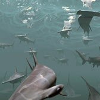

使用雾设置水下场景
鲨鱼！我们水下场景的主题
在本教程中，我们将介绍如何对一个有一群鲨鱼的水下场景进行照明和渲染。我们将使用雾设置场景，从而使场景获得水下效果。您将了解到如何使用 gobo 创建伪焦散效果来对场景进行照明。我们还将说明使用向量置换创建海洋材质的过程。
雾(Fog)
首先，我们为水下场景创建一些雾。打开“渲染设置”(Render Settings)窗口。在“环境”(Environment)属性下，将“大气”(Atmosphere)从“无”(None)更改为_“雾”(Fog)_。
您应该会在属性编辑器中看到“雾”(Fog)属性。少量增加“距离”(Distance)，如增加至 0.02，然后渲染场景。得到的结果应类似下图：
默认的雾设置。 默认情况下，“地面点”(Ground Point)为 Z。
地面法线(Ground Normal)
- 将雾颜色更改为中蓝，然后将“地面法线”(Ground Normal)更改为 Y 轴上方向，方法是在 Y 轴字段中输入 1，在 Z 轴字段中输入 0。鲨鱼将在海面附近活动，因此我们想营造一种灯光来自顶部并沿 Y 方向逐渐衰减的效果。
地面法线(Ground Normal)：1（Y 轴）
距离(Distance)
- 现在，我们要增加雾量。将“距离”(Distance)值增加到 1 左右。
“距离”(Distance)增加到 1
高度(Height)
- 顶部的鲨鱼不会接收到太多雾。增加“高度”(Height)值。这会将更多的雾推到场景顶部，使场景看起来更真实。
聚光灯照明(Spotlight lighting)
现在，我们需要在场景中投射一些灯光。我们将使用一个聚光灯。这样，我们可以向其添加一些灯光过滤器，从而更好地控制场景照明。
- 创建聚光灯并增大“圆锥体角度”(Cone Angle)，使其覆盖整个可渲染场景。在本例中，我们使用的圆锥体角度为 175。增加足够的强度或曝光，以使鲨鱼可见。
Ai Gobo
接下来，我们将创建通过光源投影的伪焦散效果。为此，我们向聚光灯添加一个 gobo 灯光过滤器。在聚光灯的“Arnold”部分下选择“灯光过滤器”(Light Filters)，然后添加 gobo 灯光过滤器。
将文件纹理连接到“滑动贴图”(Slide Map)属性。我们将使用包含焦散图案的纹理贴图。下方的纹理贴图用作连接到 gobo.slide_map 的伪焦散效果。
焦散纹理连接到 aiGobo 的“Slidemap”属性
- 测试渲染场景。使用默认设置时，焦散效果的比例看起来太小。减小“比例 S”(Scale S)和“比例 T”(Scale T)值将增大用于“滑动贴图”(Slide Map)的焦散纹理的比例。
 |
 |
| Gobo“比例 S”(Scale S)和“比例 T”(Scale T)设置为 1。焦散图案太小。 | 将 Gobo“比例 S”(Scale S)和“比例 T”(Scale T)降低为 0.5 会获得较大的焦散效果 |
- Gobo 效果看起来会略强。我们可以通过增大“密度”(Density)值减弱其效果。尝试将其稍微增加到 0.5。这看起来更好。
“密度”(Density)增大为 0.5
接下来，创建一个多边形平面，然后将其放大，使其覆盖整个场景。我们希望海洋平面是透明的。因此，必须在平面的 Arnold 属性中取消选中“不透明”(Opaque)。为其指定一种 Ai 标准材质，并将其重命名为“Sea”。将“基础权重”(Base Weight)减小为 0。将镜面反射的“权重”(Weight)增大为 1，并将镜面反射的“粗糙度”(Roughness)减小为 0。在“透射”(Transmission)下方，将透射的“权重”(Weight)增大为 1。将“折射率”(IOR)更改为 1.3（空气与水接触平面的折射率）。1.3 是物理上精确的水折射率值，但您可以根据偏好调整此值。
用于海洋曲面的多边形平面
置换(Displacement)
为获得更加逼真的波浪效果，我们将使用向量置换贴图来置换海浪。与仅在一个方向置换几何体的传统置换贴图不同，向量置换将围绕不同于法线的方向置换海洋几何体。有关创建海面的详细信息，请单击此处。
- 将下面的文件纹理连接到 Maya 置换节点。将置换节点连接到用于海洋的 Ai 标准着色器的着色组。
使用纹理贴图作为海洋的向量置换
- 在海洋多边形平面的 Arnold 属性中，将细分的“类型”(Type)更改为“Catclark”并增加“迭代次数”(Iterations)。开始时，请使用较小的“迭代次数”(Iterations)，然后逐渐增大，直到获得逼真的效果。值越高，内存使用量和渲染时间会随之增加，因此请注意，不要一开始就将此值设置得过高。

海洋多边形平面的 Arnold 细分设置
色调映射(Tone Mapping)
在下面，您可以看到 Arnold 中的最终渲染（左图）以及进行色调映射和颜色校正后的效果（右图）：
|  |
摘要
有关创建水下雾场景的教程到此结束。使用雾等环境效果，可以简单地向场景中添加逼真的环境光。此外，gobo 灯光过滤器还可用来模拟真实的照明效果（如焦散），增强您的控制能力，同时渲染开销较低。
下面是一些使用其他节点（例如 atmosphere_volume 和一个 skydome_light）的备选示例渲染，用于进一步控制水下效果。

Ai Gobo 焦散效果